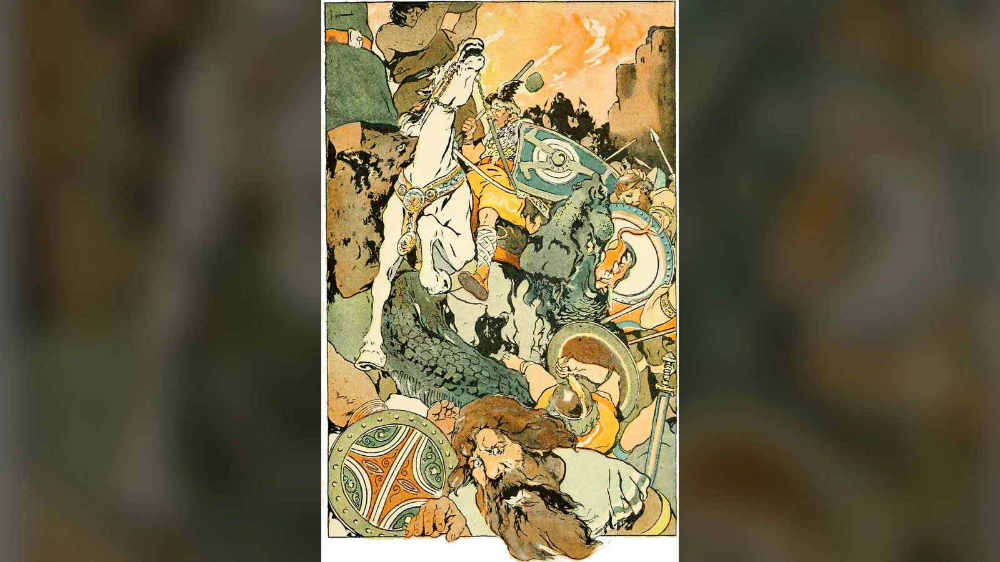
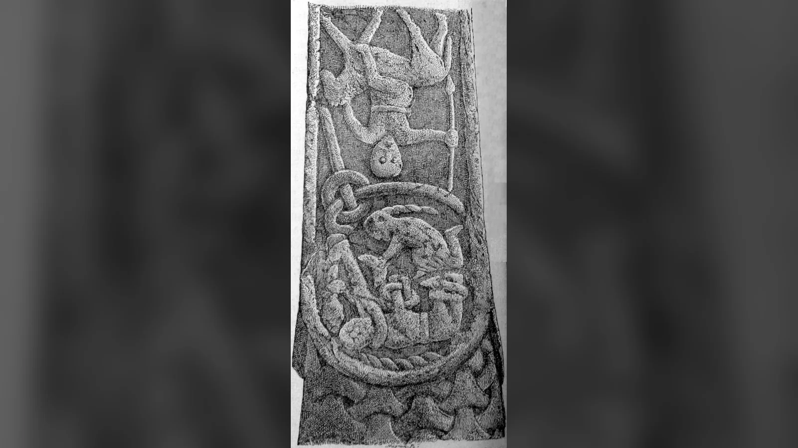
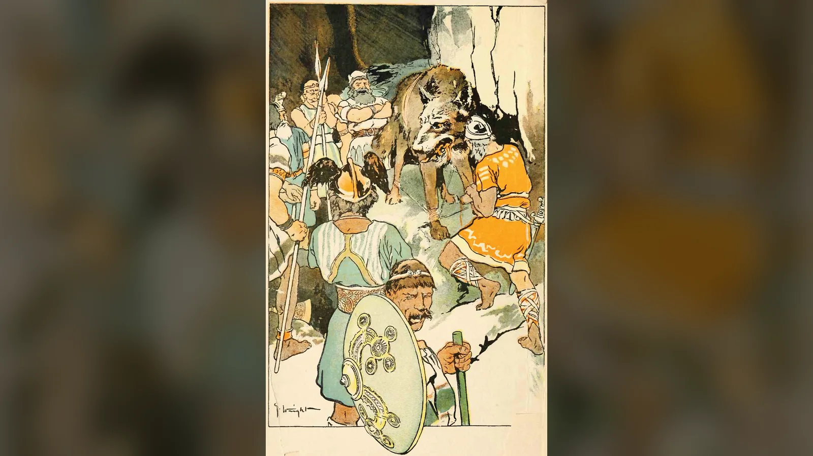
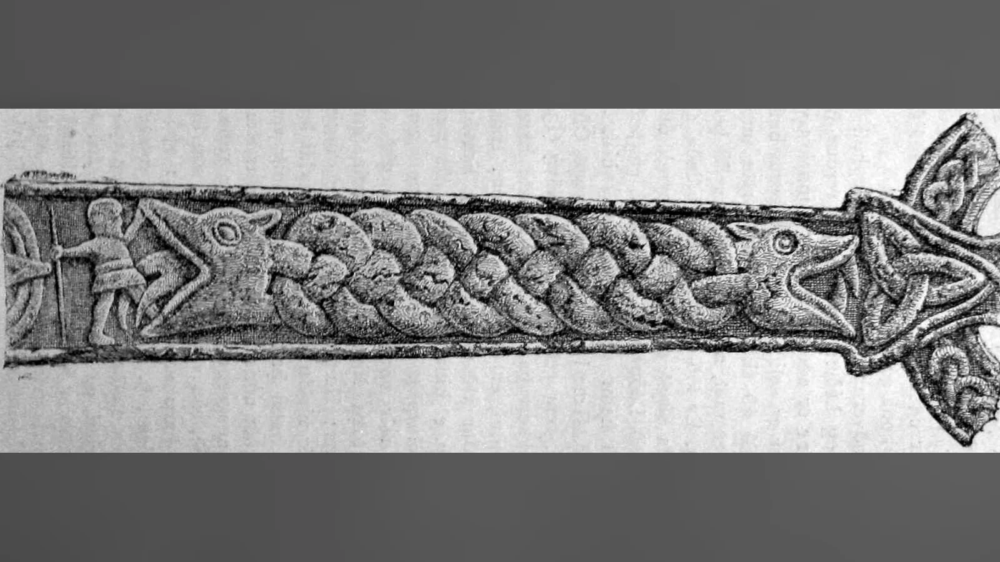
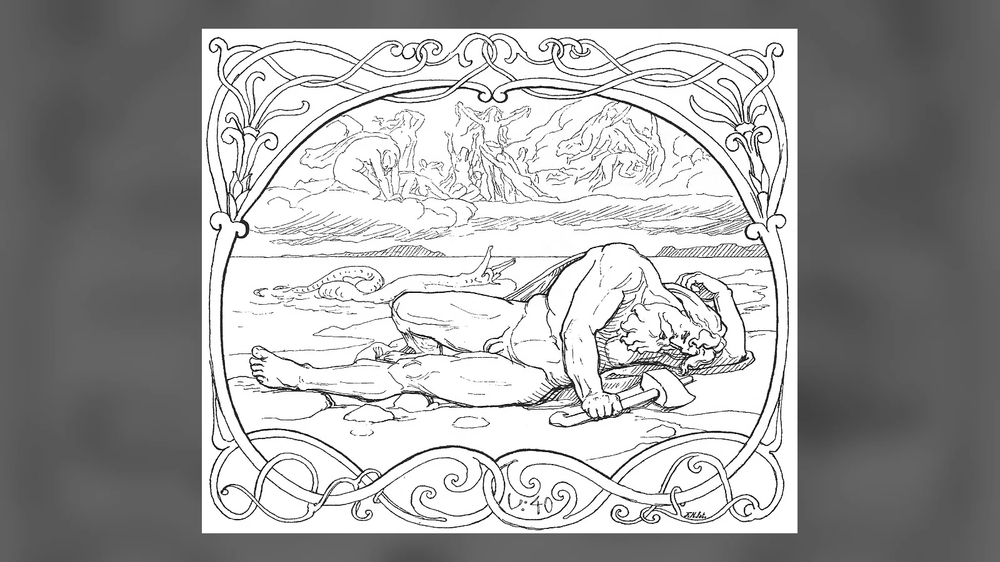
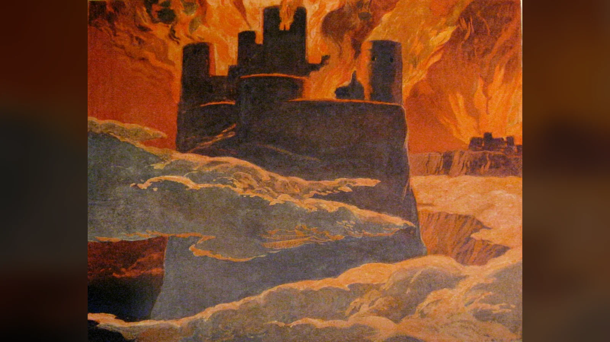
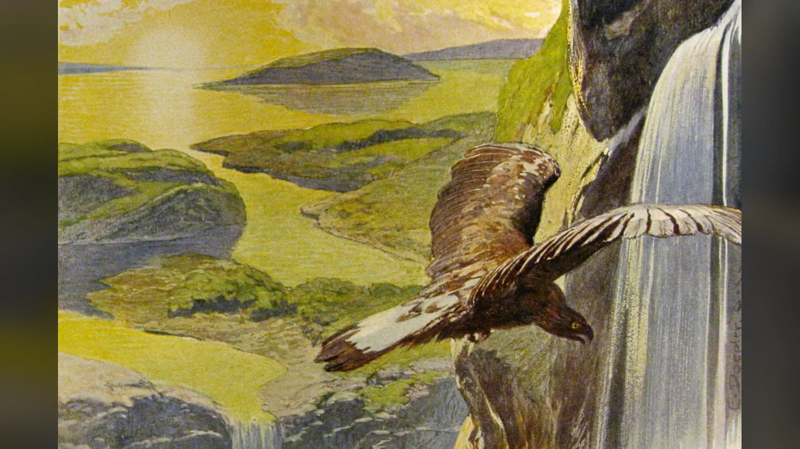

Ragnarök, Eski Nors mitolojisinde tanrıların, jötnar denen dev soylarının ve kozmik canavarların karşı karşıya geldiği son savaşı; Odin, Thor, Freyr, Týr, Heimdall ve Loki gibi başlıca varlıkların ölümünü; dünyanın ateş ve suyla yıkılışını ve ardından yeniden yükselişini anlatan olaylar bütünüdür. Fakat bu, bütün varoluşun sonsuza kadar ortadan kalktığı bir son değildir. Eski dünya çökerken bazı tanrılar hayatta kalır, Baldr ile Höðr geri döner, iki insan felaketten kurtulur ve Güneş’in kızı annesinin gökteki yolunu devralır.
Ragnarök’ün en güçlü tarafı, tanrıların sonlarının geleceğini bilmesidir. Odin kehanet peşinde koşar, ölülerden ve bilge varlıklardan bilgi toplar; Fenrir bağlanır, Jörmungandr denize atılır, savaşta ölen seçkin savaşçılar Valhalla’da toplanır. Yine de bütün bu önlemler kehaneti ortadan kaldırmaz. Fenrir sonunda Odin’i yutar. Thor dünya yılanını öldürür fakat dokuz adım sonra onun zehrinden ölür. Heimdall ile Loki birbirlerini öldürür. Freyr, Surtr’ın karşısında düşer. Tanrıların bilgisi onlara kaçış yolu değil, yaklaşan sonun farkındalığını verir.
Bugün anlatılan tek parça, kusursuz kronolojik “Ragnarök hikâyesi” ise Orta Çağ’dan kalan tek bir metnin özeti değildir. Völuspá felaketi kehanet şiirinin yoğun ve yer yer karanlık imgeleriyle anlatır. Vafþrúðnismál özellikle felaketten sonra kimlerin kalacağını açıklar. Snorri Sturluson’un 13. yüzyıldaki Nesir Edda’sı ise farklı şiirsel malzemeyi daha düzenli bir kronolojiye dönüştürür. Bu nedenle Ragnarök’ü anlamanın yolu, “önce şu oldu, sonra bu oldu” listesinden çok kaynakların nerede birleştiğini ve nerede ayrıldığını görmektir.
Ragnarök Nedir ve Kelime Ne Anlama Gelir?
Eski Norsça ragnarök iki unsurdan oluşur. İlk bölüm olan ragna, tanrısal güçler ya da tanrılar anlamındaki regin sözcüğünün çoğul tamlayan biçimiyle ilişkilidir. İkinci bölüm rök ise kader, hüküm, belirleyici gelişme ya da son anlam alanına uzanır. Bu yüzden “tanrıların kaderi”, “tanrısal güçlerin son hükmü” veya bağlama göre “tanrıların kaçınılmaz sonu” ifadesi, kelimenin eski biçimine “tanrıların alacakaranlığı”ndan daha yakındır.
“Tanrıların Alacakaranlığı” karşılığı tamamen uydurma değildir; fakat doğrudan ve tartışmasız biçimde özgün ragnarök sözcüğünün çevirisi sayılmamalıdır. Eski ve Orta Nors geleneğinde görülen ragnarøkkr biçimindeki ikinci unsur “alacakaranlık/kararma” anlamına yaklaşır. Richard Wagner’in opera döngüsünün son bölümü için kullandığı Almanca Götterdämmerung — “Tanrıların Alacakaranlığı” — 19. yüzyıldan itibaren bu karşılığın Avrupa kültüründe olağanüstü yaygınlaşmasına yardım etti. Bugün filmlerde, oyunlarda ve popüler kitaplarda karşılaştığımız ifade büyük ölçüde bu modern kültürel mirasın içinden gelir.
Türkçede “Ragnarök” yazımı Eski Norsça biçime daha yakındır. “Ragnarok” ise özellikle İngilizce klavye ve popüler kültür kullanımında çok yaygındır; arama motorlarında iki biçim de görülür. Yazımdaki fark iki ayrı mit anlamına gelmez.
Ragnarök’ü “kıyamet” diye çevirmek pratik olsa da kavramı İbrahimî dinlerdeki dünyanın nihai sonuyla tamamen eşitlemek yanıltıcı olabilir. Ragnarök’te dünya yıkılır, fakat anlatı yeni dünya ve yeni kuşakla devam eder. Eski Nors kaynakları ayrıca bunun belirli aralıklarla sonsuza dek tekrarlanan kozmik bir döngü olduğunu açıkça söylemez. Yıkımın ardından yenilenme vardır; buradan otomatik olarak “Ragnarök daha önce de yaşandı ve sürekli tekrar eder” sonucu çıkmaz.
Tanrıların Sonunu Anlatan Kaynaklar
Ragnarök hakkındaki bilgilerimiz Viking Çağı’ndan kalma tek bir kutsal metne dayanmaz. Başlıca şiirlerin çoğu, Hristiyanlaşmış Orta Çağ İzlanda’sında yazıya geçirilmiş el yazmalarında korunmuştur. Şiirlerin önemli bölümü yazıldıkları el yazmalarından daha eski sözlü ve şiirsel malzemeyi taşır; fakat her dizeyi kesin bir Viking Çağı tarihine yerleştirmek mümkün değildir. Bu kaynak durumu, Ragnarök’ün hem eski Germen-İskandinav mirasını hem de metinlerin aktarıldığı Orta Çağ dünyasını hesaba katarak okunmasını gerektirir.
Völuspá: Völvanın kehaneti
Ragnarök’ün şiirsel omurgası Völuspá’dır. Adı kabaca “völvanın kehaneti” anlamına gelir. Şiirde Odin, geçmişi ve geleceği bilen bir kadın kâhinin sözlerini dinler. Völva dünyanın ilk çağını, tanrıların düzenini, çatışmaları, Baldr’ın ölümünü, yaklaşan kozmik çözülmeyi, başlıca ölümleri ve denizden yükselen yeni dünyayı anlatır.
Völuspá’nın en önemli metin tanıkları Codex Regius ile Hauksbók’tur; ayrıca Snorri de bazı dizeleri alıntılar. Bu tanıklar her yerde birebir aynı değildir. Kıta sırası, sözcükler ve bazı dizelerin varlığı değişebilir. Bu nedenle internette karşılaşılan tek bir modern çeviriyi “Ragnarök’ün özgün ve eksiksiz senaryosu” saymak doğru değildir. Şiirin sonundaki güçlü hükümdarın yukarıdan gelişi veya Níðhöggr’ün son görünüşü gibi kısımlar tam da bu metin ve yorum tartışmalarının merkezindedir.

Vafþrúðnismál: Sonun ardından kalanlar
Vafþrúðnismál, Odin ile bilge jötunn Vafþrúðnir arasında yapılan soru-cevap biçimli bir bilgelik yarışıdır. Ragnarök savaşını Völuspá kadar sahne sahne anlatmaz; buna rağmen felaket sonrasını anlamak için vazgeçilmezdir. Fimbulvetr’den Líf ile Lífþrasir’in kurtulacağını, Hoddmímis holt’ta saklanacaklarını ve sabah çiyiyle besleneceklerini bu şiirden öğreniriz. Güneş’in yok olmadan önce bir kız doğuracağı ve kızın annesinin yolunda ilerleyeceği de burada söylenir.
Şiir ayrıca Thor’un oğulları Móði ile Magni’nin Mjölnir’e sahip olacağını bildirir. Víðarr ve Váli’nin tanrıların kutsal mekânlarında yaşayacağı, Baldr ile Höðr’ün de yeniden bir araya geleceği anlatılır. Böylece Ragnarök’ün “herkes öldü” biçimindeki popüler özeti doğrudan eski şiirle çelişir.
Grímnismál, Lokasenna ve diğer şiirler
Grímnismál doğrudan Ragnarök kronolojisi değildir; tanrıların salonları, kozmik coğrafya ve Yggdrasil hakkında verdiği bilgiler son savaşın geçtiği evreni anlamamıza yardım eder. Víðarr’ın geniş bir ülkeye sahip olduğu gibi ayrıntılar, daha sonra Fenrir’e karşı çıkacak tanrının arka planını oluşturur.
Lokasenna’da Loki, Ægir’in şöleninde tanrıları ve tanrıçaları tek tek aşağılar. Şiir Ragnarök’ün tamamını anlatmaz; Loki’nin tanrılar topluluğuyla ilişkisinin ne kadar çatışmalı hâle geldiğini gösterir. Şiirin sonunda Thor’un gelişi ve Loki’yi tehdit etmesi, daha sonraki düşmanlık tablosuyla uyumludur. Yine de Loki’nin hakaretlerinin her birini bağımsız mitolojik gerçek gibi kullanmak doğru değildir; şiir bir söz düellosudur ve hakaret geleneğinin kurallarıyla işler.
Hyndluljóð gibi başka şiirlerde de dünyanın sonuyla ilişkilendirilen imgeler ve figürler bulunur. Korunma biçimleri ve tarihlendirme sorunları yüzünden bunları tek bir kronolojiye zorlamak yerine yardımcı tanıklıklar olarak değerlendirmek daha güvenlidir.
Snorri Ragnarök’ü nasıl sistemleştirdi?
Snorri Sturluson’un yaklaşık 1220’lerde oluşturduğu Nesir Edda’nın Gylfaginning bölümü, bugün popüler anlatılarda gördüğümüz ayrıntılı Ragnarök sırasının büyük bölümünü sağlar. Snorri şiirlerden alıntı yapar; Fimbulvetr’i, kurtların Güneş ve Ay’la ilişkisini, Fenrir’in kurtuluşunu, Naglfar’ı, Gjallarhorn’u, tanrıların savaş hazırlığını ve Vígríðr’daki karşılaşmaları birbirine bağlar.
Snorri’nin değeri tam da burada büyüktür: daha eski şiirsel malzemeyi anlamamızı sağlayan açıklamalar verir. Fakat İzlanda’nın resmen Hristiyanlaşmasından iki yüzyıldan fazla zaman sonra yazmıştır. Amacı eski pagan dini canlandırmak değil, skaldik şiirin mitolojik dilini Hristiyan çağın şairlerine açıklamaktır. Bu yüzden onun düzgün kronolojisini bütün Vikinglerin aynı ayrıntılarla inandığı değişmez bir “din kitabı” gibi okumak güvenli değildir.
Ragnarök’ten Önce Dünya Nasıl Çözülür?
Ragnarök’ün tek bir kişi tarafından başlatıldığına dair basit bir düğme yoktur. “Loki Ragnarök’ü başlatır” ifadesi popüler özetlerde işe yarasa da kaynakların kurduğu yapı daha geniştir. Baldr’ın ölümü, Loki’nin cezalandırılması, Fimbulvetr, toplumsal bağların parçalanması, kozmik varlıkların serbest kalması ve göksel düzenin bozulması birbirine eklenir. Loki son savaşta tanrıların karşısındadır; fakat Ragnarök’ün bütün nedenlerini tek başına ona yüklemek metinleri daraltır.
Baldr’ın ölümü
Baldr’ın ölümü eski düzenin çözülmesindeki en ağır kırılmalardan biridir. Völuspá, Baldr’ın kaderini, Höðr’ün onu öldürmesini ve ince görünen ökseotu dalını bilir. Snorri’nin Gylfaginning’i ise olay örgüsünü çok daha ayrıntılı kurar: Frigg varlıklardan Baldr’a zarar vermemeleri için söz alır, ökseotunu genç ve zararsız gördüğü için dışarıda bırakır; Loki bunu öğrenir, ökseotundan silah hazırlar ve kör Höðr’ün atışını yönlendirir.
Bu ayrıntı farkı önemlidir. “Bütün Edda kaynaklarında Loki Baldr’ı aynı şekilde öldürür” denemez. Snorri’de Loki planın açık düzenleyicisidir; Völuspá’nın korunmuş dizeleri Höðr ve ökseotunu öne çıkarır. Baldr’ın ölümü Ragnarök öncesindeki ahlaki ve kozmik bozulmanın güçlü işaretidir, fakat şiir “Baldr öldüğü saniye Ragnarök başladı” şeklinde mekanik bir başlangıç noktası koymaz.
Loki’nin bağlanması
Baldr’ın geri dönmesi için bütün varlıkların onun ardından ağlaması gerektiğinde Þökk adlı kadın ağlamayı reddeder. Snorri, bunun Loki olduğunun düşünüldüğünü söyler. Ardından tanrılar Loki’yi yakalar. Ceza sahnesinde oğullarının kaderi, bağırsaklarla yapılan bağlar ve başının üzerine yerleştirilen zehirli yılan yer alır. Eşi Sigyn bir kap tutarak zehri yakalar; kabı boşaltmak için uzaklaştığında damlalar Loki’nin yüzüne düşer. Loki’nin kıvranması depremlerle açıklanır.
Völuspá da bağlı Loki imgesini bilir. Son savaş yaklaşırken bağlar çözülür. Buradaki önemli nokta, Loki’nin birdenbire sebepsiz yere “kötü tarafa geçen” Marvel tipi rakip olmadığıdır. Tanrılarla ilişkisi uzun bir çatışma tarihinin sonunda kopmuştur. Yine de bütün bu malzemeyi tek yazarın tasarladığı psikolojik karakter gelişimi gibi okumamak gerekir.

- yüzyıl Gosforth Haçı’ndaki bu sahne, bağlı Loki ile zehri kapta tutan Sigyn olarak yorumlanır. Figürlerin adları yazılı olmadığı için teşhis kesin değildir. Kaynak; Kamu malı.
Fimbulvetr ve insan toplumunun çöküşü
Fimbulvetr sözcüğü “büyük/kudretli kış” anlamına gelir. Snorri, her yönden kar yağacağını, şiddetli soğuk ve rüzgâr olacağını, Güneş’in faydasının kalmayacağını ve aralarında yaz bulunmadan üç kışın birbirini izleyeceğini söyler. Bundan önce de üç başka kıştan ve dünyayı saran savaşlardan söz eder; popüler anlatılardaki “Fimbulwinter tam üç yıldır” ifadesi bu farklı anlatı unsurlarının nasıl sayıldığına göre basitleşebilir.
Felaket yalnız hava durumuyla sınırlı değildir. Snorri’nin aktardığı ve Völuspá’daki ünlü akrabalık çözülmesi dizeleriyle bağlantılı tablo, kardeşlerin birbirini öldürdüğü, aile bağlarının bozulduğu, ensest ve şiddetin arttığı bir çağ tasvir eder. Ragnarök başlamadan önce toplumsal düzen de kozmik düzen kadar aşınmıştır. Kış, savaş ve akrabalık bağlarının kopuşu aynı dünyanın parçalanmasının farklı yüzleridir.
Bu sahne yüzünden MS 536 sonrası iklim felaketiyle Fimbulvetr arasında bağ kurulmuştur; fakat tarihsel hipoteze geçmeden önce mitolojik anlatının kendi işlevini görmek gerekir. Fimbulvetr, tanrıların savaşından önce insan dünyasının da dayanma sınırına ulaştığını gösterir.
Güneş Kararırken: Kozmik Düzenin Dağılması
Ragnarök’ün gökyüzü sahneleri modern özetlerde çoğu zaman “Sköll Güneş’i, Hati Ay’ı yer” cümlesine indirgenir. Kaynaklar bundan daha dağınıktır. Grímnismál Sköll’ün Güneş’i takip ettiğini, Hati Hróðvitnisson’un gökteki parlak gelini izlediğini söyler. Snorri bu geleneği sistemleştirerek kurtların Güneş ve Ay’ı yakalamasını dünyanın sonuyla ilişkilendirir. Völuspá’nın felaket dizelerinde Güneş kararır, yıldızlar gökten kaybolur ve gök cisimlerinin düzeni çöker.
Fenrir’le göksel kurtların ilişkisi de her kaynakta aynı soy ağacı açıklığıyla verilmez. Snorri, Ironwood/Járnviðr’de yaşayan dev kadının Fenrir soyundan kurtlar yetiştirdiğini anlatır ve bunlardan birinin Güneş’i yutacağını söyler. Şiirsel malzemede isimlerin dağılımı daha az düzenlidir. Bu nedenle “Sköll kesin Güneş’i, Hati kesin Ay’ı yutar; bütün kaynaklar bunu böyle anlatır” ifadesi, Snorri’nin sistemleştirmesini bütün geleneğin tek versiyonu hâline getirir.
Yggdrasil de sarsılır. Völuspá, eski dünya ağacının titrediğini, jötunnların korktuğunu ve kozmik düzenin bağlarının çözülmeye başladığını söyler. Snorri bu sahneyi Ragnarök kronolojisine yerleştirir. Kaynak “Yggdrasil tamamen yanıp yok oldu” diye açık hüküm vermediği için modern görsellerdeki ağacın patlayarak parçalanmasını tarihsel anlatı gibi aktarmamak gerekir. Üstelik Líf ile Lífþrasir’in Hoddmímis holt’ta saklanması, Mímir’in ağacı/korusu ile ilişkilendirilen yaşam alanının felaket sonrasında da anlam taşıdığını düşündürür.
Dünya sarsılırken dağlar çöker, bağlar kopar. Bu bağların çözülmesi Fenrir ve Loki’nin serbest kalmasının da kozmik karşılığıdır. Düzen artık tanrıların daha önce kurduğu sınırları tutamaz.
Fenrir, Jörmungandr ve Naglfar Serbest Kalıyor
Fenrir’in hikâyesi Ragnarök’ten çok önce başlar. Tanrılar Loki ile Angrboða’nın çocuklarından felaket geleceğini öğrenince Jörmungandr’ı denize atar, Hel’i ölüler dünyasına gönderir ve Fenrir’i kendi yanlarında tutar. Kurt büyüdükçe korku artar. Sıradan zincirleri kıran Fenrir sonunda cücelerin yaptığı Gleipnir adlı ince fakat büyülü bağla bağlanır. Týr güvence olarak elini kurdun ağzına koyar; aldatıldığını anlayan Fenrir onun elini koparır.
Ragnarök geldiğinde Gleipnir artık onu tutamaz. Snorri’nin tasvirinde Fenrir ağzını öyle geniş açar ki alt çenesi yere, üst çenesi göğe uzanır; yer olsaydı daha da açacaktır. Gözlerinden ve burun deliklerinden alevler çıkar. Bu ayrıntılar Snorri’nin son savaş sahnesini görsel ve düzenli hâle getiren nesir anlatısına aittir.
Jörmungandr da denizden çıkar. Dünya yılanı o kadar büyümüştür ki denizde Midgard’ı çevreleyip kendi kuyruğunu tutar. Ragnarök’te kıvrandığında deniz karaya taşar. Yılanın karaya gelişi, tanrılarla canavarlar arasındaki sınırın bozulmasının yanı sıra deniz ile kara arasındaki kozmik sınırın da kalkmasıdır. Thor’la son karşılaşması, daha önceki balık avı mitinin tekrarı değildir; balık avında sonuçsuz kalan düşmanlık Vígríðr’da ölümle tamamlanır.
Naglfar bu taşan denizde hareket eden en ürkütücü nesnelerden biridir. Snorri geminin ölü insanların kesilmemiş tırnaklarından yapıldığını anlatır ve bu nedenle ölülerin tırnaklarının kesilmesi gerektiğini ekler; aksi hâlde Naglfar’ın yapımına malzeme sağlanmış olur. Bu açıklama cenaze pratiğiyle mit arasında doğrudan bağ kuran Snorri yorumudur ve Viking Çağı’nın her yerinde aynı uygulamanın arkeolojik olarak kanıtlandığı anlamına gelmez.
Naglfar’ın kaptanı konusunda popüler kültür sık sık Loki’yi öne çıkarır. Snorri’nin Gylfaginning anlatısında geminin başında Hrym bulunur ve jötnar onunla gelir. Loki ise Hel’in halkıyla birlikte savaş alanına ulaşır. Völuspá’nın yoğun şiirsel dizeleri gemi ve Loki çevresinde farklı okumalara izin verdiği için modern yeniden anlatımlarda ikisi birleşmiştir. “Loki kesinlikle Naglfar’ı yönetir” demek kaynak ayrımını ortadan kaldırır.

Gjallarhorn Çalıyor: Tanrıların Son Hazırlığı
Düşman kuvvetleri hareket ettiğinde Heimdall ayağa kalkar ve Gjallarhorn’u çalar. Borunun sesi tanrıları uyarır. Heimdall’ın kozmik sınır bekçisi rolü burada doruğa ulaşır; daha önce Bifröst’ü ve tanrıların alanını gözeten kişi, son sınır ihlalini haber veren kişidir.
Odin son kez Mímir’le bağlantılı bilgeliğe yönelir. Snorri, Odin’in Mímir’in başına danıştığını söyler. Bu sahne Ragnarök’ün merkezindeki tuhaf gerilimi yoğunlaştırır: Odin ne olacağını öğrenmek için hayatı boyunca bilgi peşindedir ve son anda da bilgiye başvurur, fakat bilgi kaderi iptal etmez. Odin’in kişiliği, Valhalla ve kehanet arayışı hakkında ayrıntılı arka plan için Antik Bilge’nin Odin makalesi bu bağlamı tamamlar.
Æsir savaş meclisi kurar. Valhalla’da toplanan einherjar, yani savaşta ölen seçkin savaşçılar da son mücadeleye çıkar. Odin’in neden yüzyıllarca savaşçı biriktirdiği Snorri’nin sisteminde böylece açıklanır. Sonucun önceden bilinmesi savaşı anlamsız kılmaz; tanrılar kaçmak yerine rollerini yerine getirir.
Muspell’in kuvvetleri Surtr’ın önderliğinde ilerler. Bifröst üzerinden geçtiklerinde köprü kırılır. Eski kaynaklardaki Bifröst’ü Marvel filmlerindeki mekanik/teknolojik uzay geçidiyle karıştırmamak gerekir. Grímnismál ve Snorri geleneğinde o tanrıların kullandığı göksel köprüyle ilişkilidir; Ragnarök’te kozmik ulaşım ve sınır düzeninin kendisi de çöker.
Vígríðr Ovasında Son Savaş
Snorri son karşılaşmanın Vígríðr adlı ovada gerçekleşeceğini söyler. Ad, “savaşın sürdüğü/geniş savaş alanı” anlam alanıyla açıklanır. Vafþrúðnismál Vígríðr’ı Surtr ile tanrıların karşılaşacağı alan olarak anar ve yüz fersah genişliğinde olduğunu söyler. Ölçüyü modern kilometre hesabına çevirip sahte kesinlik üretmektense şiirin vermek istediği ölçeği görmek daha anlamlıdır: bu, sıradan bir savaş meydanı değil kozmik orduları içine alacak genişlikte bir alandır.
Savaş düzeninde Odin Fenrir’e, Thor Jörmungandr’a, Freyr Surtr’a yönelir. Týr ile Garmr, Heimdall ile Loki karşı karşıya gelir. Bu eşleşmelerin en düzenli tablosu Snorri’dedir. Völuspá bazı ölümleri şiirsel imgelerle verir fakat bütün düelloları aynı açıklıkta sıralamaz.
| Karşılaşma | Sonuç |
|---|---|
| Odin – Fenrir | Fenrir Odin’i yutar |
| Víðarr – Fenrir | Víðarr Fenrir’i öldürür |
| Thor – Jörmungandr | Thor yılanı öldürür; dokuz adım sonra zehirden ölür |
| Freyr – Surtr | Freyr öldürülür |
| Týr – Garmr | Birbirlerini öldürürler |
| Heimdall – Loki | Birbirlerini öldürürler |
Odin ve Fenrir
Odin son savaşta Fenrir’in karşısına çıkar. Snorri onu altın miğferi, güzel zırhı ve Gungnir mızrağıyla savaşın önünde tasvir eder. Bu ayrıntılı savaş donanımı Nesir Edda’nın sahneyi sistemli biçimde canlandırdığı kısımdır; Völuspá’nın Odin’in ölümü daha sıkıştırılmış şiirsel ifadelerle gelir.
Sonuç değişmez: Fenrir Odin’i yutar. Tanrıların hükümdarının ölümü, Ragnarök’ün yalnız çevredeki dünyanın değil eski iktidar düzeninin de sonu olduğunu gösterir. Odin’in geleceğini bildiği hâlde neden Fenrir’in karşısına çıktığına ilişkin kaynaklarda iç monolog yoktur. “Onur için savaştı”, “kaderini isteyerek seçti” gibi ifadeler edebî yorum olabilir; metinsel gerçek gibi yazılamaz.
Odin’in ölümüyle savaş bitmez. Oğlu Víðarr hemen harekete geçer.
Víðarr’ın intikamı
Víðarr, Ragnarök sonrasına kalan tanrılardan biridir ve son savaşta babasının intikamını alır. Snorri’nin en ünlü versiyonunda “kalın ayakkabılı” Víðarr bir ayağını Fenrir’in alt çenesine basar, eliyle üst çenesini kavrar ve kurdun ağzını parçalar. Ayakkabının, insanların ayakkabı yaparken burun ve topuk kısmından kestikleri deri parçalarının zaman boyunca birikmesinden oluştuğu açıklanır. Bu yüzden Snorri, tanrılara yardım etmek isteyen kişinin bu parçaları atması gerektiğini söyler.
Völuspá’daki Víðarr sahnesi aynı ayrıntıları vermez. Şiirde Odin’in oğlunun Fenrir’e saldırdığı ve kılıcıyla kurdun yüreğine ulaştığı şeklinde okunan ifade öne çıkar. Böylece “Víðarr Fenrir’i tam olarak nasıl öldürdü?” sorusunun tek bir değişmez cevabı yoktur: Fenrir’in Víðarr tarafından öldürülmesi ortak çekirdektir; ayakkabı ve çene sahnesi Snorri’nin ayrıntılı versiyonudur.

Thor ve Jörmungandr
Thor, dünya yılanıyla son kez karşılaşır. Eski Nors mitolojisinde ikilinin düşmanlığı daha önceki balık avı anlatısında kurulmuştur; Ragnarök o yarım kalan mücadeleyi tamamlar. Thor Jörmungandr’ı öldürür. Ardından yılandan dokuz adım uzaklaşır ve zehir nedeniyle yere düşer.
Sahnenin gücü ayrıntısının sadeliğindedir. Kaynaklar Thor’un Jörmungandr’ın “kopan başından fışkıran zehir bulutu” içinde öldüğünü söylemez; bu tür sinematik eklemeler modern yeniden anlatımlara aittir. Snorri yılanın püskürttüğü zehirden, Völuspá ise Midgard’ın koruyucusunun yılanı öldürdükten sonra geri çekilip ölmesinden söz eder.
Thor savaşı kazanır ama zaferinden sağ çıkamaz. Buna rağmen Mjölnir kaybolmaz. Vafþrúðnismál, oğulları Magni ile Móði’nin felaketten sonra çekice sahip olacağını bildirir. Thor’un mitolojik ailesi, Loki ile gerçek ilişkisi ve Mjölnir’in Marvel’daki “layıklık” kuralından farkı için Thor ve Loki makalesi bu noktayı daha ayrıntılı ele alır.

Freyr ve Surtr
Freyr’in karşısında Surtr vardır. Snorri, Freyr’in iyi bir silaha sahip olmadığı için bu savaşta dezavantajlı olduğunu ve bunun nedeninin daha önce kılıcını Skírnir’e vermesi olduğunu açıklar. Freyr’in kılıcından vazgeçmesi Gylfaginning’deki Gerðr hikâyesine uzanır: Gerðr’a ulaşmak için hizmetkârı Skírnir’i gönderdiğinde kılıcını ona verir.
Buradan “Freyr aşk uğruna bütün dünyayı yok etti” sonucu çıkarmak aşırı olur. Freyr’in silahsızlığı ile Ragnarök’teki yenilgisi arasında Snorri açık bağ kurar; fakat dünyanın sonunu tek bir romantik tercihe indirgemez. Surtr çok daha geniş kozmik çözülmenin parçasıdır.
Surtr’ın adı “siyah/kararmış olan” anlam alanıyla ilişkilendirilir. Muspell yönünden gelir, parlak ya da alevli kılıcıyla savaşır ve sonunda dünyayı ateşe verir. Onu yalnız “ateş devi” etiketiyle kapatmak, hem adının hem de Muspell bağlamının zenginliğini azaltır.
Týr ve Garmr
Týr ile Garmr’ın birbirini öldürmesi özellikle Snorri’nin sistemli savaş anlatısında açıktır. Garmr, Gnipahellir önünde bağlı bulunan korkunç köpektir ve Völuspá’da Ragnarök yaklaşırken ulumasıyla tekrar tekrar anılır. Snorri onu Týr’ın rakibi yapar; savaşın sonunda ikisi de ölür.
Garmr’ın Fenrir’le aynı varlık olup olmadığı uzun süredir tartışılmıştır. Her ikisi de bağlı canavar, ikisi de dünyanın sonunda serbest kalan ölümcül köpekgiller olarak görünür. Yine de kaynaklar isimleri ayrı kullanır ve Snorri aynı savaşta Fenrir’i Odin-Víðarr çizgisine, Garmr’ı Týr’a bağlar. Benzerlikten kimlik sonucu çıkarmak zorunlu değildir.
Heimdall ve Loki
Loki’nin son rakibi Thor veya Odin değil Heimdall’dır. Snorri, Heimdall ile Loki’nin savaşacağını ve birbirlerini öldüreceklerini açıkça söyler. Bu eşleşmenin daha eski arka planı konusunda Húsdrápa ve Brísingamen çevresindeki gelenekler önemlidir; Loki ile Heimdall’ın daha önce de karşı karşıya geldiğini düşündüren şiirsel izler vardır, fakat kaybolmuş anlatının bütün ayrıntılarını bilmiyoruz.
Marvel’ın Heimdall ve Loki’sini geriye doğru Edda’ya taşımak burada özellikle yanıltıcıdır. Mitolojik Loki Odin’in evlatlık oğlu, Thor’un kardeşi değildir. Son savaşta da “kardeşinin karşısına” çıkmaz. Heimdall’la karşılıklı ölüm, eski geleneğin kendi çatışma hattıdır.
Surtr’ın Ateşi ve Dünyanın Denize Batışı
Son düelloların ardından Surtr’ın ateşi dünyayı kaplar. Völuspá göğün ve yeryüzünün büyük dönüşümünü tek bir elemente indirgemez: Güneş kararır, toprak denize batar, parlak yıldızlar gökten kaybolur, duman ve ateş yükselir, göğün kendisi alevle kuşatılır. Snorri de Surtr’ın dünyayı ateşe vermesini final felaketinin merkezine yerleştirir.
Bu nedenle Ragnarök’ü “Surtr bütün dokuz dünyayı patlattı” diye anlatmak modern sinema dilidir. Eski şiirin imgeleri ateş, deniz, karanlık ve kozmik sarsıntıyı üst üste bindirir. Dünyanın denize batması özellikle önemlidir; çünkü birkaç dize sonra aynı dünya yeniden denizden yükselecektir. Yıkım ile yenilenme aynı görüntünün iki aşaması hâline gelir.

Yggdrasil’in bu felakette tam olarak ne kadar zarar gördüğü açık değildir. Ağaç titrer; kozmik düzen sarsılır. Fakat kaynakların açıkça söylemediği “Yggdrasil tamamen yanarak yok oldu” hükmü eklenmemelidir. Ragnarök sonrası yaşamın Hoddmímis holt ile bağlantısı, ağaç/koru geleneğinin felaketi aşan tarafını da gündemde tutar.
Ragnarök’te Kimler Ölür, Kimler Hayatta Kalır?
“Ragnarök’te bütün tanrılar ölür” sık tekrarlanan ama yanlış bir genellemedir. Başlıca eski kuşak tanrılarının bir bölümü ölür: Odin Fenrir tarafından yutulur; Thor Jörmungandr’ı öldürdükten sonra zehirden ölür; Freyr Surtr’a yenilir; Týr Garmr’la, Heimdall Loki’yle karşılıklı ölür. Loki de böylece savaş alanında ölür.
Buna karşılık Víðarr ve Váli yeni dünyada yaşar. Thor’un oğulları Magni ile Móði de hayatta kalır ve Mjölnir’i devralır. Baldr ile onu öldüren Höðr Hel’den geri gelir. Völuspá Hœnir’in de gelecekteki düzende kehanet/işlev sahibi olduğunu düşündüren bir dize içerir. Kaynakların açıkça kaderini söylemediği Frigg, Freyja, Sif veya Iðunn gibi tanrıçaları “kesin hayatta kalanlar” listesine eklemek güvenli değildir; onların sonunun anlatılmaması, otomatik olarak öldükleri veya kurtuldukları anlamına gelmez.
| Varlık | Ragnarök’teki kaderi |
|---|---|
| Odin | Fenrir tarafından yutulur |
| Thor | Jörmungandr’ı öldürür; dokuz adım sonra zehirden ölür |
| Loki | Heimdall ile karşılıklı ölür |
| Heimdall | Loki ile karşılıklı ölür |
| Freyr | Surtr tarafından öldürülür |
| Týr | Garmr ile karşılıklı ölür |
| Fenrir | Odin’i öldürür; Víðarr tarafından öldürülür |
| Jörmungandr | Thor tarafından öldürülür |
| Garmr | Týr ile karşılıklı ölür |
| Surtr | Dünyayı ateşe verir; sonraki kaderi açık biçimde anlatılmaz |
| Víðarr ve Váli | Hayatta kalırlar |
| Magni ve Móði | Hayatta kalır, Mjölnir’i devralırlar |
| Baldr ve Höðr | Felaketten sonra Hel’den geri dönerler |
| Líf ve Lífþrasir | Fimbulvetr’den kurtulur ve insan soyunu sürdürürler |
Bu tablo bile Ragnarök’ün “tanrıların tamamen yok oluşu” olmadığını gösterir. Eski kuşağın büyük temsilcileri giderken oğulların ve geri dönenlerin dünyası başlar.
Denizden Yükselen Yeni Dünya
Völuspá’nın en unutulmaz dönüşlerinden biri, yıkımın ardından gelir. Völva ikinci kez dünyanın denizden yükseldiğini görür; dünya yeşildir. Şelaleler akar, kartal balık avlar, tarlalar ekilmeden ürün verir. Felaketin ardından boşluk değil yeniden yaşanabilir bir yeryüzü vardır.
Bu yeni dünya eski dünyanın birebir kopyası değildir. Odin ve Thor yoktur; onların oğulları vardır. Eski çatışmaların bazı temsilcileri ortadan kalkmıştır; Baldr ile Höðr ise birlikte geri döner. Altın oyun taşları yeniden bulunur. Geçmiş hem kaybedilmiş hem de hatırlanmıştır.

Baldr’ın dönüşü
Völuspá ve Vafþrúðnismál, Baldr ile Höðr’ün felaketten sonra yeniden bir arada bulunacağını söyler. Snorri bunu onların Hel’den dönmesi olarak açıklar. Baldr’ın ölümü Ragnarök öncesi düzenin kırılmasını simgeleyen en güçlü olaylardan biriyse, geri dönüşü yeni dünyanın eski yarayı farklı biçimde kapattığını düşündürür.
Baldr’ın dönüşü Hristiyan diriliş düşüncesiyle uzun zamandır karşılaştırılmıştır. Karşılaştırma meşrudur; şiirin elimizdeki biçimi Hristiyanlaşma sonrası yazıya geçirilmiştir. Fakat benzerlik tek başına “Baldr aslında İsa’nın kopyasıdır” sonucunu kanıtlamaz. Baldr geleneğinin Hristiyanlık öncesine uzanan unsurları bulunabilir ve şiirin aktarım tarihi farklı kültürel katmanların birbirine temas ettiği bir ortamı gösterir.
Mjölnir’in yeni sahipleri
Vafþrúðnismál, Magni ile Móði’nin Ragnarök sonrasında Mjölnir’e sahip olacağını açıkça söyler. Thor ölür; çekici ve onun temsil ettiği güç tamamen yok olmaz. Eski koruyucu gücün oğullara geçmesi, yeni dünyanın sıfırdan yaratılmadığını gösteren küçük ama güçlü ayrıntıdır.
Víðarr ve Váli’nin hayatta kalmasıyla birlikte düşünüldüğünde belirgin bir kuşak değişimi ortaya çıkar. Odin ve Thor gibi baba kuşağının merkezî tanrıları ölürken oğulları dünyayı devralır. Bunun eski İskandinavların açıkça formüle ettiği “kuşak yenilenmesi öğretisi” olduğunu söyleyemeyiz; anlatılar birlikte okunduğunda görülen edebî yapı budur.
Líf ve Lífþrasir
İnsanlık da tamamen yok olmaz. Vafþrúðnismál’a göre Líf ve Lífþrasir, Hoddmímis holt denilen yerde saklanarak Fimbulvetr’den kurtulur. Sabah çiyini yiyecek olarak kullanırlar ve insan soyları onlardan türeyecektir. Snorri bu bilgiyi Ragnarök sonrasına ilişkin anlatısına alır.
Adlar genellikle “Yaşam” ve “Yaşamdan gelen/yaşama tutunan” gibi anlamlarla açıklanır. İkili bazen “İskandinav Âdem ile Havva’sı” diye sunulur. İki insanın felaketten kurtulup yeni insanlığı başlatması karşılaştırmayı anlaşılır kılar; fakat anlatıları özdeşleştirmez. Hoddmímis holt, sabah çiyi ve Ragnarök bağlamı Eski Nors geleneğinin kendi yapısına aittir.
Güneş’in kızı
Vafþrúðnismál’daki daha az bilinen ayrıntılardan biri yeni Güneş’tir. Güneş, Fenrir tarafından yakalanmadan önce bir kız doğuracaktır; tanrılar öldükten sonra kız annesinin gökteki yolunu izleyecektir. Kozmik yenilenme yalnız yeryüzünde değil gökte de kuşak değişimiyle gerçekleşir.
Bu motif, Ragnarök’ün mutlak hiçlik olmadığını en açık biçimde gösterir. Eski Güneş kaybolur, fakat ışığın işlevi yeni kuşağa geçer. Magni ve Móði’nin Mjölnir’i devralmasıyla gökteki bu devir arasında yapısal benzerlik vardır: eski düzenin temel güçleri yeni sahiplerle devam eder.
Altın oyun taşları ve Níðhöggr
Völuspá’da tanrılar çimenlikte buluşur ve eski günlerde sahip oldukları altın oyun taşlarını yeniden bulur. Bu sahne kaybedilmiş ilk çağın hatırlanması, düzenin yeniden kurulması veya zamanın başlangıcıyla sonu arasında bağ kurulması şeklinde yorumlanmıştır. Şiir tek bir sembolik sözlük vermediği için taşların “kesin olarak şu anlama geldiğini” söylemek gereksizdir.
Yeni dünyanın tamamen lekesiz olup olmadığı ise şiirin sonunda yeniden belirsizleşir. Níðhöggr, kanatlarında cesetler taşıyarak aşağıdan uçar. Ardından völvanın batışı/ayrılışı gelir. Son kıtanın şiirin özgün sonuna ait olup olmadığı ve sahnenin yeni dünyadaki kötülüğün sürmesi anlamına gelip gelmediği tartışılmıştır. Yine de metnin okurda bıraktığı etki açıktır: yeniden doğuş, kolay bir “ve herkes sonsuza dek mutlu yaşadı” kapanışı değildir.
Ragnarök Gerçek Bir İklim Felaketinden Doğmuş Olabilir mi?
MS 536’da Kuzey Yarımküre’nin geniş bölümünde Güneş ışığını azaltan büyük bir atmosferik olay yaşandı. Buz çekirdekleri, ağaç halkaları ve tarihsel tanıklıklar büyük volkanik püskürmelerin atmosfere aerosol taşıdığını; 536 ve 540 çevresindeki püskürmelerin ciddi soğumaya yol açtığını gösteriyor. 6. yüzyıl ortası, son iki bin yılın en sert kısa dönemli iklim bozulmalarından biri olarak araştırılıyor.
İskandinavya açısından mesele özellikle ilgi çekicidir. Soğuk büyüme mevsimleri tarımsal üretimi zorlaştırmış olabilir. 2023’te Climate of the Past dergisinde yayımlanan çok disiplinli çalışma, 536 ve 540 volkanik olaylarından sonra bazı İskandinav bölgelerinde büyüme mevsimi sıcaklıklarının ciddi biçimde düştüğünü; kimi alanlarda ürün başarısızlığı riskinin yükseldiğini gösterdi. Aynı çalışma etkilerin her yerde aynı olmadığını vurgular: bazı yerleşimler terk edilirken başka bölgelerde devamlılık vardır. 2024’te yayımlanan İsveç odaklı geniş değerlendirme de iklim şoku ile 6. yüzyıl arkeolojik değişimleri arasındaki olası bağları incelerken kanıt boşluklarına dikkat çeker.
Bo Gräslund ve Neil Price gibi araştırmacılar bu krizle Fimbulvetr ve Ragnarök geleneği arasında kültürel hafıza bağı olabileceğini savundu. Uzun süreli soğuk, başarısız hasatlar, kararan Güneş ve toplumsal kriz, Fimbulvetr imgeleriyle dikkat çekici biçimde uyuşur. Teori bu yüzden ciddiye alınmaya değerdir.
Fakat “bilim insanları Ragnarök’ün gerçekten yaşandığını kanıtladı” cümlesi araştırmanın söylediğinden çok daha fazlasıdır. Mathias Nordvig ile Felix Riede, 6. yüzyıl çevre olaylarını 13. yüzyılda yazıya geçirilmiş mitolojik metinlerle doğrudan eşleştirmenin yöntem sorunlarına dikkat çekmiştir. Güncel iklim-arkeoloji çalışmaları da İskandinavya’da tek tip bir çöküş tablosu yerine bölgesel farklılıklar gösteriyor. MS 536/540 felaketi Fimbulvetr geleneğine katkıda bulunmuş olabilir; Ragnarök’ün bütün ayrıntılarını tek tarihsel volkan olayının şifrelenmiş kaydı saymak için kanıt yoktur.
Bu hipotezin en güçlü yanı “Ragnarök gerçekten oldu” iddiası değil, çok daha ölçülü bir ihtimaldir: kuşaklar boyunca hatırlanan olağanüstü çevresel krizler, daha eski kozmik ve mitolojik motiflerle birleşerek dünyanın karardığı büyük kış anlatılarını beslemiş olabilir.
Ragnarök Anlatısında Hristiyanlık Etkisi
Ragnarök araştırmalarının en zor sorularından biri, elimizdeki metinlerde Hristiyan düşüncesinin ne ölçüde bulunduğudur. İzlanda yaklaşık 1000 yılında resmen Hristiyanlaştı. Codex Regius 13. yüzyılın ikinci yarısında yazıldı; Snorri de 13. yüzyıl Hristiyan İzlandalısıydı. Metinlerin yazıya geçirildiği dünya ile Viking Çağı pagan dini arasında yüzyıllar vardır.
Völuspá’da dünyanın yıkılması, ahlaki çözülme, ardından yenilenmiş dünya, Baldr’ın geri dönüşü ve bazı metin tanıklarında yukarıdan gelen güçlü varlık gibi unsurlar Hristiyan kıyamet ve yenilenme düşünceleriyle karşılaştırılmıştır. Şiirin bazı dizelerinin Hristiyan ortamda biçimlenmiş olması mümkündür. Özellikle şiirin son bölümleri bu tartışmanın yoğunlaştığı yerdir.
Bunun karşısında kozmik çatışma, kader, canavarlarla savaş, tanrıların ölümü ve dünyanın yıkılması gibi bütün unsurları Hristiyanlıktan türetmek de kanıtların ötesine geçer. Germen dünyasında daha eski kahramanlık ve kader gelenekleri vardır; Ragnarök figürlerinin çoğu Hristiyan eskatolojisinden doğrudan alınmış karakterler değildir. Thor ile Jörmungandr, Odin ile kurt, Surtr ve Muspell gibi unsurların kendi İskandinav şiirsel geçmişleri bulunur.
En güvenli çerçeve, Völuspá’nın bize ulaşan biçiminin iki kültürel dünyanın temas ettiği ortamda korunmuş olmasıdır. Bazı motifler eski pagan geleneklerine dayanabilir, bazı dizeler Hristiyan düşüncesinden etkilenmiş olabilir, kimi imgeler ise bu iki dünyanın karşılaşması içinde yeni anlam kazanmış olabilir. “Ragnarök tamamen Hristiyan icadıdır” da “metinlerde hiçbir Hristiyan etkisi olamaz” da kaynak tarihini gereğinden fazla basitleştirir.
Marvel ve God of War Ragnarök’ü Nasıl Değiştirdi?
Marvel’ın Thor: Ragnarok filmi eski adları ve motifleri kullanır fakat Edda’lardaki son savaşı yeniden anlatmaz. Filmde Hela Odin’in kızı ve Thor’un ablasıdır. Mitolojik Hel ise Loki ile Angrboða’nın kızıdır; Fenrir ve Jörmungandr’ın kardeşidir. Filmde Surtur Asgard’ı yok eder, fakat olay örgüsü Hela’yı durdurmak için onun gücünün bilinçli biçimde serbest bırakılması üzerine kuruludur. Eski Ragnarök’te Surtr daha geniş son savaşın parçasıdır ve Freyr’i öldürür.
Mitolojik Odin Fenrir tarafından yutulur; filmde ölümü böyle gerçekleşmez. Mitolojik Thor Jörmungandr’ı öldürdükten sonra zehirden ölür; MCU Thor’u aynı kaderi yaşamaz. Loki eski kaynaklarda Heimdall’la karşılıklı ölür; Marvel’ın olay örgüsü farklıdır. Valkyrie, Hulk, Sakaar ve Sonsuzluk Taşları Edda’lardaki Ragnarök’ün parçaları değildir. “Asgard bir yer değil, halktır” fikri de filmin tematik çözümüdür; eski metnin sözü değildir.
Marvel’ı bu nedenle “Ragnarök’ü yanlış anlatmakla” suçlamak anlamlı olmaz. Film tarihsel kaynak uyarlaması değil, mitolojik isim ve motifleri kendi süper kahraman sürekliliğine taşıyan modern kurgudur. Eski Thor ile Loki’nin gerçekte kardeş olmaması gibi temel farklar, modern uyarlamanın aile dramı kurmak için yaptığı tercihlerdir.
God of War Ragnarök de benzer biçimde eski adlardan yararlanır ama farklı bir evren kurar. Kratos Eski Nors kaynaklarında yoktur. Atreus’un Loki olarak kurulması oyunun özgün kurgusudur. Odin, Thor, Týr, Fenrir, Jörmungandr ve Surtr gibi isimler mitolojik gelenekten gelir; aile ilişkileri, karakterlerin motivasyonları, ölümler ve Ragnarök’ün gerçekleşme biçimi oyunun anlatısına göre yeniden düzenlenir.
Oyunun yaptığı en ilginç değişikliklerden biri kader fikrini oyuncunun eylemi ve karakterlerin seçimleriyle karşı karşıya getirmesidir. Eski kaynaklarda da kader ve bilgi arasındaki gerilim güçlüdür; fakat Kratos’un “kehaneti kırma” hikâyesi Edda’da yoktur. Oyun eski soruyu modern dramatik dile çevirir: son biliniyorsa davranışlarımızın anlamı nedir?
Tanrılar Sonu Bildikleri Hâlde Neden Savaştı?
Ragnarök anlatısının trajedisi bilgisizlikten doğmaz. Odin geleceği öğrenmek için völvaya gider, Vafþrúðnir’le bilgelik yarışına girer, Mímir’in bilgisine başvurur. Fenrir’in tehlikesi bilindiği için kurt bağlanır. Jörmungandr yaklaşan felaket yüzünden denize atılır. Odin Valhalla’da einherjar toplar. Tanrılar sonun ihtimalinden habersiz değildir.
Yine de alınan önlemlerin hiçbiri tehdidi ortadan kaldırmaz. Fenrir’i bağlamak onu yok etmez; kurt Ragnarök’te serbest kalır ve Odin’i öldürür. Jörmungandr’ı denize atmak onu ortadan kaldırmaz; yılan büyüyerek bütün dünyayı çevreler ve Thor’un ölümüne yol açar. Loki’nin bağlanması onun son savaşta geri dönmesini engellemez. Valhalla’nın savaşçıları sonucu tersine çeviremez.
Burada dikkat çekici bir anlatısal paradoks vardır: geleceği bilmek, geleceği değiştirme gücü anlamına gelmez. Ragnarök’ün merkezinde bu açıdan bilgisizlik değil bilginin sınırı bulunur. Bu, Eski İskandinavların yazılı bir “kader doktrini” olarak bize bıraktığı cümle değildir; farklı anlatılar yan yana getirildiğinde ortaya çıkan edebî ve kültürel okumadır.
Tanrıların kendi kararları da gelecekteki düşmanlarını biçimlendirir. Fenrir korkulduğu için bağlanır ve Týr’ın elini koparan düşmana dönüşür. Jörmungandr denize atılır ve orada kozmik boyuta ulaşır. Hel uzaklaştırılır ve ölülerin alanında iktidar kazanır. Freyr kılıcını daha önce verir ve Surtr karşısına onsuz çıkar. Loki cezalandırılır, fakat bağlarından kurtulup düşman kuvvetleriyle gelir. Eski düzen kendini korumaya çalışırken, son savaşın koşullarının bir bölümünü de üretmiş görünür.
Bu okuma Ragnarök’ü “kötü devler iyi tanrılara saldırdı” şemasından çıkarır. Jötnar tanrıların mutlak karşıtı olan tek tip kötücül ırk değildir; tanrıların kendi soyları da onlarla iç içedir. Odin’in ve Thor’un soy ilişkileri bile sınırların geçirgenliğini gösterir. Ragnarök, düzen ile dışarıdaki saf kötülüğün savaşı olmaktan çok, uzun süredir gerilim taşıyan kozmik ilişkilerin çözülmesidir.
Tanrıların yine de savaşması, kaynakların açık psikolojik gerekçeler vermediği bir noktadır. “Onur”, “cesaret”, “kaderi kabullenme” gibi kavramlar Eski Nors kahramanlık edebiyatıyla uyumlu yorumlar sağlayabilir. Fakat Odin’in zihninden geçenleri biliyormuş gibi konuşmak yerine anlatının yapısına bakmak daha sağlamdır: kaçınılmaz son, eylemi ortadan kaldırmaz. Kehanet sonucu söyler; tanrıların savaş alanına çıkmasını engellemez.
Eski Düzenin Sonu, Yeni Dünyanın Belirsiz Başlangıcı
Ragnarök’ü yalnızca “İskandinav kıyameti” diye hatırlamak, anlatının yarısını kaybetmektir. Odin, Thor, Freyr, Týr, Heimdall ve Loki ölür; Fenrir ve Jörmungandr yok edilir; Surtr’ın ateşi dünyayı sarar ve toprak denize batar. Eski kozmik düzen gerçekten sona erer. Fakat şiir burada susmaz.
Denizden yeşil dünya yükselir. Víðarr ve Váli yaşar. Magni ile Móði babalarının çekicini taşır. Baldr ile Höðr geri döner. Líf ile Lífþrasir insan soyunu sürdürür. Güneş’in kızı gökte annesinin yoluna girer. Altın oyun taşları yeniden bulunur. Yıkımdan sonra devam eden şey, eskisinin kusursuz kopyası değildir; hafızasını taşıyan yeni kuşaktır.
Bu yapı Ragnarök’ü basit iyimser yeniden doğuş masalına da dönüştürmez. Völuspá’nın sonunda Níðhöggr’ün cesetlerle görünmesi, yeni dünyanın tamamen kötülükten arınıp arınmadığını açık bırakır. Metnin son kıtaları üzerindeki tartışmalar da bu belirsizliği büyütür. Yenilenme vardır; kusursuzluk garanti edilmez.
Baba kuşağının ölümü ve oğulların kalışı özellikle belirgindir. Odin gider, Víðarr ve Váli kalır. Thor gider, Magni ile Móði kalır. Mjölnir bile yok olmaz; yeni ellere geçer. Eski güç biçimleri sona ererken bazı işlevler devam eder. Baldr ile Höðr’ün birlikte dönüşü ise eski dünyanın kardeş kanıyla açılmış yarasının yeni dünyada başka bir ilişkiye dönüştüğünü düşündürür.
Ragnarök bu yüzden yalnız sonun hikâyesi değildir. Tanrıların geleceği bildiği hâlde onu engelleyememesinin, kendi düzenlerini korumak için aldıkları kararların beklenmedik sonuçlarının ve yıkımdan sonra bile geçmişin bütünüyle silinmemesinin hikâyesidir. Eski dünyanın kaderi gerçekleşir; fakat son söz boşluğa değil, yaşamın başka sahiplerle devam ettiği bir dünyaya aittir.
Ragnarök döngüsel olarak tekrar eder mi?
Dünyanın denize batıp yeniden yükselmesi, eski tanrıların yerini oğullarının alması ve Güneş’in kızının annesinin yolunu sürdürmesi yüzünden Ragnarök sık sık “İskandinavların sonsuz kıyamet döngüsü” diye anlatılır. Kaynakların söylediği bundan daha sınırlıdır. Völuspá bir ilk dünyanın kuruluşunu, bozulmasını, yıkımını ve ardından yeni dünyanın ortaya çıkışını anlatır; fakat yeni dünyanın da aynı olayları yaşayacağını ve ikinci, üçüncü Ragnarök’lerin sonsuza kadar tekrarlanacağını açıkça bildirmez. Vafþrúðnismál da felaket sonrasındaki insanları ve tanrıları anlatırken tekrar eden kozmik takvim vermez.
Döngüsel okuma yine de tamamen temelsiz değildir. Güneş’in yerini kızının alması, Mjölnir’in oğullara geçmesi ve dünyanın yeniden yeşermesi süreklilik duygusu yaratır. Başlangıçtaki altın oyun taşlarının sonda yeniden bulunması da şiirin başı ile sonu arasında bilinçli yankı kurar. Fakat “yenilenme” ile “sonsuz tekrar” aynı iddia değildir. Kaynakların güvenle desteklediği şey, ölümden sonra devamlılıktır; yeni dünyanın bir gün aynı senaryoyla mutlaka yok olacağı ise açıkça söylenmez.
Naglfar neden ölülerin tırnaklarından yapılır?
Naglfar ayrıntısı Ragnarök’ün gündelik yaşamla temas ettiği ender noktalardan biridir. Snorri, geminin ölü insanların tırnaklarından yapıldığını söyledikten sonra yaşayanlara yönelik açıklama ekler: ölülerin tırnakları kesilmelidir; kesilmeden bırakılırsa Naglfar’ın yapımına katkıda bulunurlar. Bu pasaj, mitolojik son ile cenaze hazırlığı arasında doğrudan ilişki kurar.
Bunun ne kadar eski ve ne kadar yaygın bir uygulamayı yansıttığını belirlemek daha zordur. Snorri’nin açıklamasını bütün Viking Çağı İskandinavya’sında arkeolojik olarak belgelenmiş zorunlu cenaze kuralı sayamayız. Organik tırnak kalıntılarının arkeolojik kayıtta izlenmesi zaten son derece güçtür. Metnin kesin olarak gösterdiği şey, 13. yüzyılda aktarılan gelenekte ölü bedenin hazırlanmasıyla kozmik felaket arasında anlamlı bağ kurulmuş olmasıdır.
Naglfar’ın kendisi de Ragnarök’ün ölüm birikimini maddi nesneye dönüştürür. Gemi, tek bir anda ortaya çıkmış silah değil, ölülerin kalıntılarıyla zaman içinde tamamlanan bir araç gibi tasarlanır. Bu görüntü Ragnarök’ü yalnız gelecekte gerçekleşecek uzak bir savaş olmaktan çıkarır: her ölüm, anlatının mantığı içinde son güne doğru biriken malzemeye dönüşebilir. Bunun Eski Nors toplumunun bilinçli teolojik öğretisi olduğunu söylemek mümkün değildir; Snorri’nin aktardığı motifin edebî etkisi ise son derece açıktır.
Vígríðr gerçekten nerede bulunuyordu?
Vígríðr’ı modern haritada aranabilecek tarihsel savaş alanı gibi düşünmek doğru değildir. Vafþrúðnismál, Surtr ile tanrıların savaşacağı alanın adını verir ve olağanüstü genişliğini vurgular. Snorri de bu bilgiyi Ragnarök coğrafyasına yerleştirir. Şiirin ilgilendiği şey koordinat değil, son savaşın kozmik ölçekte gerçekleşebileceği açıklıktır.
Eski Nors kozmolojisinin mekânları modern coğrafya mantığıyla her zaman örtüşmez. Ásgarðr, Miðgarðr, Jötunheimr, Hel, Muspell ve Vígríðr hem anlatısal hem kozmolojik alanlardır. Farklı metinler aralarındaki ilişkiyi her zaman tek bir haritaya yerleştirecek açıklıkta vermez. Bu nedenle internette görülen ayrıntılı “dokuz dünya haritaları” çoğu zaman dağınık kaynakların modern şemalaştırılmasıdır. Vígríðr için de güvenli ifade, onun son savaşın gerçekleştiği mitolojik geniş alan olduğudur.
Kaderi bilmek neden felaketi durdurmuyor?
Ragnarök’ün bütün parçaları bir arada okunduğunda kehanetin işlevi daha belirginleşir. Kehanet, karakterlere kaçış planı veren modern bilimkurgu bilgisi değildir. Odin geleceği öğrendikçe daha fazla hazırlık yapar; fakat öğrendiği geleceğin temel çizgisi değişmez. Bu durum, Eski Nors edebiyatındaki kader fikrinin başka kahramanlık anlatılarıyla da yan yana okunmasına izin verir: ölümün bilinmesi, kişinin eylem kapasitesini sıfırlamaz.
Ragnarök’ün dramatik ağırlığı bu nedenle “tanrılar sürpriz saldırıya uğradı” fikrinden gelmez. Fenrir’in ne olduğu bilinir. Jörmungandr’ın tehdidi bilinir. Surtr’ın geleceği bilinir. Odin kendi ölümünü bütünüyle önleyemez. Thor’un dünya yılanıyla son karşılaşması da kehanet düzeninin içindedir. Bilginin varlığı ile kontrolün yokluğu arasındaki mesafe, anlatının en kalıcı gerilimlerinden birini oluşturur.
Sıkça Sorulan Sorular
Ragnarök nedir?
Ragnarök, Eski Nors mitolojisinde Fimbulvetr, kozmik düzenin bozulması, Fenrir ve Jörmungandr gibi varlıkların serbest kalması, tanrılarla düşman kuvvetlerin son savaşı, başlıca tanrıların ölümü ve dünyanın yıkılıp yeniden yükselmesiyle oluşan olaylar bütünüdür. Odin Fenrir tarafından öldürülür; Thor Jörmungandr’ı öldürür fakat zehirden ölür; Loki ile Heimdall birbirlerini öldürür. Ragnarök mutlak yok oluş değildir: bazı tanrılar, Líf ile Lífþrasir ve Güneş’in kızı felaketten sonraki dünyanın devamını sağlar.
Ragnarök kelimesi ne anlama gelir?
Eski Norsça ragnarök kabaca “tanrıların/tanrısal güçlerin kaderi veya son hükmü” anlam alanına sahiptir. İlk unsur ragna tanrısal güçlerle, ikinci unsur rök kader, hüküm veya belirleyici sonla ilişkilidir. Çok ünlü “Tanrıların Alacakaranlığı” çevirisi özgün biçimin tartışmasız karşılığı değildir. “Alacakaranlık” anlamına yaklaşan ragnarøkkr adlı farklı/geç biçim ve Wagner’in Götterdämmerung başlığı bu modern karşılığın yaygınlaşmasında etkili olmuştur.
Ragnarök’ü kim başlatır?
Kaynaklar Ragnarök’ü tek kişinin başlattığı bir olay gibi anlatmaz. Baldr’ın ölümü, Loki’nin bağlanması, Fimbulvetr, savaşlar, akrabalık düzeninin çözülmesi, göksel düzenin bozulması ve bağlı canavarların serbest kalması birbiri ardına gelir. Loki son savaşta tanrıların karşısındadır ve bağlarından kurtulur; yine de “Loki bir düğmeye basarak Ragnarök’ü başlattı” şeklindeki özet doğru değildir. Baldr’ın ölümü de önemli dönüm noktasıdır fakat bütün kaynakların belirlediği kesin “başlangıç anı” değildir.
Fimbulvetr nedir?
Fimbulvetr, Ragnarök’ten önce gelen büyük veya kudretli kıştır. Snorri, şiddetli kar ve rüzgârın hâkim olduğu, Güneş’in faydasının kalmadığı ve aralarında yaz olmadan kışların birbirini izlediği bir dönem anlatır. Bu doğal felakete toplumsal çözülme eşlik eder; kardeşler birbirini öldürür ve akrabalık bağları parçalanır. MS 536 ve 540 çevresindeki volkanik kaynaklı soğuma ile Fimbulvetr arasında bağlantı kurulmuştur, fakat bunun mitin kesin tarihsel kökeni olduğu kanıtlanmış değildir.
Ragnarök’te Odin’i kim öldürür?
Odin’i Fenrir öldürür. Son savaşta Odin Gungnir’iyle Fenrir’in karşısına çıkar; kurt onu yutar. Ardından Odin’in oğlu Víðarr babasının intikamını alarak Fenrir’i öldürür. Snorri’nin versiyonunda Víðarr kalın ayakkabısıyla kurdun alt çenesine basıp üst çenesini kavrar ve ağzını parçalar. Völuspá aynı ölümü farklı şiirsel ayrıntıyla verir. Bu nedenle Fenrir’i öldüren kişinin Víðarr olması ortak çekirdektir; öldürme yönteminin ayrıntıları kaynaklara göre farklı görünür.
Thor Ragnarök’te nasıl ölür?
Thor Ragnarök’te Jörmungandr’la savaşır ve dünya yılanını öldürür. Zaferden sonra dokuz adım uzaklaşır; ardından Jörmungandr’ın zehri yüzünden yere düşerek ölür. Eski kaynaklarda Thor’un ölümüne modern filmlerdeki gibi ayrıntılı patlama veya kopmuş baş sahneleri eklenmez. Thor’un ölümü soyunun da sonu değildir. Vafþrúðnismál, oğulları Magni ile Móði’nin felaketten sonra yaşayacağını ve Mjölnir’i devralacağını söyler.
Loki Ragnarök’te nasıl ölür?
Loki Ragnarök sırasında bağlarından kurtulur ve tanrıların karşısındaki kuvvetlerle son savaşa gelir. Snorri’nin anlatısında Loki’nin rakibi Heimdall’dır. İkisi savaşır ve birbirlerini öldürür. Bu nedenle mitolojik Loki’nin sonu Thor’la veya Odin’le bir aile düellosu değildir. Marvel’ın Loki’yi Odin’in evlatlık oğlu ve Thor’un kardeşi yapması modern kurgudur; Eski Nors kaynaklarında Loki’nin babası Fárbauti, annesi Laufey/Nál’dır ve Ragnarök’teki ölüm eşleşmesi Heimdall’ladır.
Fenrir’i kim öldürür?
Fenrir, Odin’i yuttuktan sonra Odin’in oğlu Víðarr tarafından öldürülür. Snorri, Víðarr’ın özel kalın ayakkabısıyla kurdun alt çenesine bastığını ve üst çenesini tutarak ağzını parçaladığını anlatır. Ayakkabının insanların ayakkabı yaparken ayırdığı deri parçalarından oluştuğu açıklaması da Snorri’ye aittir. Völuspá’nın şiirsel anlatısı ayrıntıyı farklı verir ve Víðarr’ın silahını öne çıkaran okumaya izin verir. Dolayısıyla intikamı alan tanrı konusunda kaynaklar birleşir, yöntemde ayrıntı farkı vardır.
Surtr kimdir?
Surtr, Ragnarök’te Muspell yönünden gelen ve son savaşın ateş gücüyle ilişkilendirilen varlıktır. Adı “siyah/kararmış olan” anlam alanına bağlanır. Snorri’de alevli/parlak kılıcıyla ilerler, Freyr’i öldürür ve savaşın ardından dünyayı ateşe verir. Völuspá da Surtr’ın güneyden ateşle gelişini güçlü imgelerle anlatır. “Ateş devi” pratik bir tanım olsa da Surtr’ın rolü tek bir element etiketinden geniştir; kozmik düzenin son çözülmesinin başlıca aktörlerinden biridir.
Ragnarök’ten hangi tanrılar kurtulur?
Kaynaklar Víðarr ve Váli’nin Ragnarök sonrasında yaşayacağını söyler. Thor’un oğulları Magni ile Móði de hayatta kalır ve Mjölnir’e sahip olur. Baldr ile Höðr Hel’den geri döner; Völuspá Hœnir’in yeni düzende bulunduğunu düşündüren bir dize de içerir. Buna karşılık kaderi açıkça anlatılmayan Frigg, Freyja, Sif ve Iðunn gibi tanrıçaları kesin kurtulanlar listesine eklemek doğru değildir. “Bütün tanrılar ölür” ifadesi de eski kaynaklarla uyuşmaz.
Ragnarök’ten sonra dünya yeniden doğar mı?
Evet. Völuspá, dünyanın denizden yeniden yükseldiğini ve yeşerdiğini anlatır. Tarlalar ekilmeden ürün verir, sular akar ve yeni tanrısal kuşak bir araya gelir. Baldr ile Höðr geri döner, Magni ile Móði Mjölnir’i devralır. Líf ile Lífþrasir Fimbulvetr’den kurtularak insan soyunu sürdürür; Güneş’in kızı annesinin gökteki yolunu alır. Bununla birlikte Níðhöggr’ün şiirin sonundaki görünüşü, yeni dünyanın tamamen kötülükten arınmış kusursuz bir ütopya olup olmadığını belirsiz bırakır.
Ragnarök gerçekten yaşanmış olabilir mi?
Ragnarök’ün tamamının tarihsel bir olay olarak yaşandığını gösteren kanıt yoktur. Buna karşılık MS 536 ve 540 çevresindeki büyük volkanik püskürmelerin Kuzey Yarımküre’de ciddi soğuma yarattığı bilimsel olarak güçlü biçimde desteklenir. İskandinavya’da tarımsal ve toplumsal etkiler yaşanmış olabilir. Bazı araştırmacılar bu krizin Fimbulvetr ve Ragnarök geleneğinin oluşumuna katkıda bulunmuş olabileceğini savunur. Başka araştırmacılar, yüzyıllar sonra yazıya geçirilmiş mitleri tek bir iklim olayının doğrudan hatırası saymanın yöntem sorunlarına dikkat çeker. Bağlantı ilgi çekici bir hipotezdir, kanıtlanmış eşitlik değildir.
Kaynakça
- Larrington, Carolyne (çev.). The Poetic Edda. 2. baskı. Oxford World’s Classics, Oxford University Press, 2014.
- Pettit, Edward (ed. ve çev.). The Poetic Edda: A Dual-Language Edition. Open Book Publishers, 2023.
- Snorri Sturluson. Edda: Prologue and Gylfaginning. Ed. Anthony Faulkes. Viking Society for Northern Research.
- Snorri Sturluson. Edda: Skáldskaparmál. Ed. Anthony Faulkes. Viking Society for Northern Research.
- Lindow, John. Norse Mythology: A Guide to the Gods, Heroes, Rituals, and Beliefs. Oxford University Press, 2001.
- Simek, Rudolf. Dictionary of Northern Mythology. D. S. Brewer, 1993.
- Davidson, H. R. Ellis. Gods and Myths of Northern Europe. Penguin, 1964.
- Clunies Ross, Margaret. Prolonged Echoes: Old Norse Myths in Medieval Northern Society. Odense University Press, 1994–1998.
- Hultgård, Anders. The End of the World in Scandinavian Mythology: A Comparative Perspective on Ragnarök. Oxford University Press, 2022.
- Price, Neil. The Children of Ash and Elm: A History of the Vikings. Basic Books, 2020.
- Gräslund, Bo; Price, Neil. “Twilight of the gods? The ‘dust veil event’ of AD 536 in critical perspective.” Antiquity 86, 2012.
- Nordvig, Mathias; Riede, Felix. “Are There Echoes of the AD 536 Event in the Viking Ragnarok Myth? A Critical Appraisal.” Environment and History 24(3), 2018, 303–324.
- van Dijk, Evelien vd. “Climatic and societal impacts in Scandinavia following the 536 and 540 CE volcanic double event.” Climate of the Past 19, 2023, 357–398.
- Anagnostou vd. “The AD 536/540 climate event in Sweden – a review.” Boreas 54(1), 2025.
- Árni Magnússon Institute for Icelandic Studies. Codex Regius / Eddukvæði dijital el yazması kaynakları.
- Viking Society for Northern Research. Anthony Faulkes’in Snorri Edda edisyonları.
- Skaldic Poetry of the Scandinavian Middle Ages. Eski Nors skaldik şiir metin ve yorumları.
- Manx National Heritage. Thorwald Cross ve Man Adası İskandinav taş haçları koleksiyon kayıtları.
- British/yerel miras kayıtları ve Gosforth St Mary’s Church kaynakları. Gosforth Cross ikonografisi.
- Swedish National Heritage Board / Runor. Ledberg ve Altuna runik taş kayıtları.